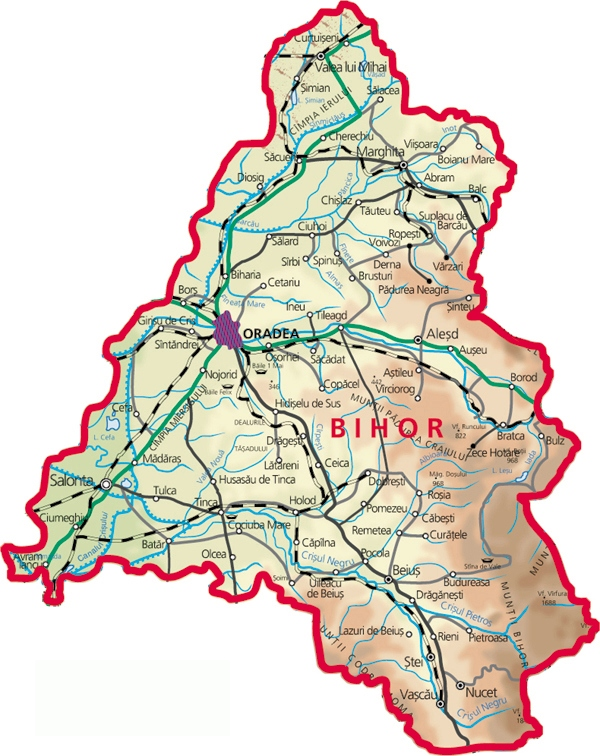
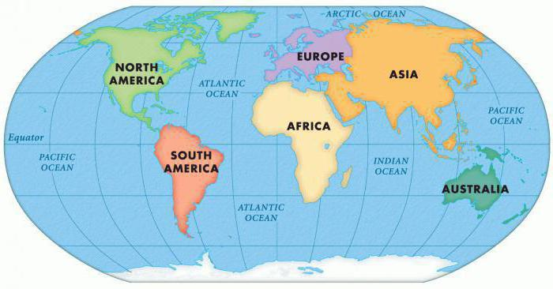

-
Populație (2011)[1][2]
- municipiu ▼ 196367 locuitori
- Densitate 1.858 loc./km²
- Metropolitană 245,537 locuitori
- Recensământul anterior, 2002 206.614 locuitori
- - Ceyrat Franța
- - Coslada Spania
- - Debrețin Ungaria
- - Giv'atayim Israel
- - Ivano-Frankivsk Ucraina
- - Cașovia Slovacia
- - Comuna Linköping Suedia
- - Mantova Italia
- - Diamantina Brazilia
Fus orar EET (+2) - Ora de vară (DST) EEST (+3) Cod poștal 410xxx Prefix telefonic (+40) 0259
- Localități înfrățite
Plăcuțe de înmatriculare BH Prezență online site web oficial Modificați la Wikidata
GeoNames Modificați la Wikidata facebook Modificați la Wikidata Oradea în Harta Iosefină a Comitatului Bihor, 1782-85 Oradea în Harta Iosefină a Comitatului Bihor, 1782-85
Modifică date / text Consultați documentația formatului Oradea, mai demult Oradea Mare, este municipiul de reședință al județului Bihor, Crișana, România.
Se află în vestul României, pe râul Crișul Repede, în imediata apropiere a frontierei cu Ungaria.
---ORADEA---- - ORADEA - -
Mail Oradea

𝔹𝕠𝔾𝔻𝔸𝕟



proba
proba1
proba2 |
proba2.1 | proba2.2 |
|---|
proba3
proba5 |
proba5.1 | |
|---|---|---|
| proba6 | proba6.1 |
proba6.2 |
| Saptamana 1 | ||||||
|---|---|---|---|---|---|---|
| Luni | Marti | Miercuri | Joi | Vineri | Sambata | Duminica |
| Balet | Pauza | Pian | Pauza | Inot | Pauza | Pauza |
| Tv | Radio | Carte | Revista | Tableta | Pauza | Pauza |
| ID | Daylight lenght | Latitudine | Londitude | Elevation | Bud set score |
| 751 | 12.91 | 55.03 | -118.73 | 649 | 0.76 |
|---|---|---|---|---|---|
| 752 | 12.91 | 56.41 | -117.76 | 739 | 0.77 |
| 751 | 12.91 | 55.03 | -118.73 | 649 | 0.76 |
| 751 | 12.91 | 55.03 | -118.73 | 649 | 0.76 |
| 755 | 13 | 57.78 | -117.96 | 459 | 0.82 |
| ... | ... | ... | ... | ... | ... |
| 793 | 13.91 | 58 | -123 | 511 | 0.97 |
| Main Mode | Area of workplace | |||||||
|---|---|---|---|---|---|---|---|---|
| Central London | Rest of InnerLondon | Outer Londor | All London | Rest of Great Britain | Great Britain | |||
| Car and Van | 48 | 32 | 25 | 29 | 20 | 20 | ||
| Motorbike, moped, scooter | 36 | 29 | 27 | 31 | 19 | 21 | ||
| Bicycle | 33 | 24 | 20 | 25 | 15 | 17 | ||
| Bus and coach | 47 | 39 | 36 | 40 | 33 | 34 | ||
| National Rail | 69 | 66 | 43 | 40 | 66 | 58 | ||
| Underground, tram, light rail | 49 | 45 | 37 | 47 | 42 | 20 | ||
| Walk | 21 | 16 | 13 | 15 | 12 | 13 | ||
| All modes | 55 | 39 | 27 | 39 | 21 | 23 | ||